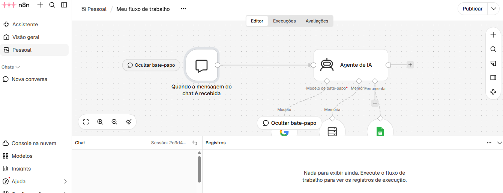
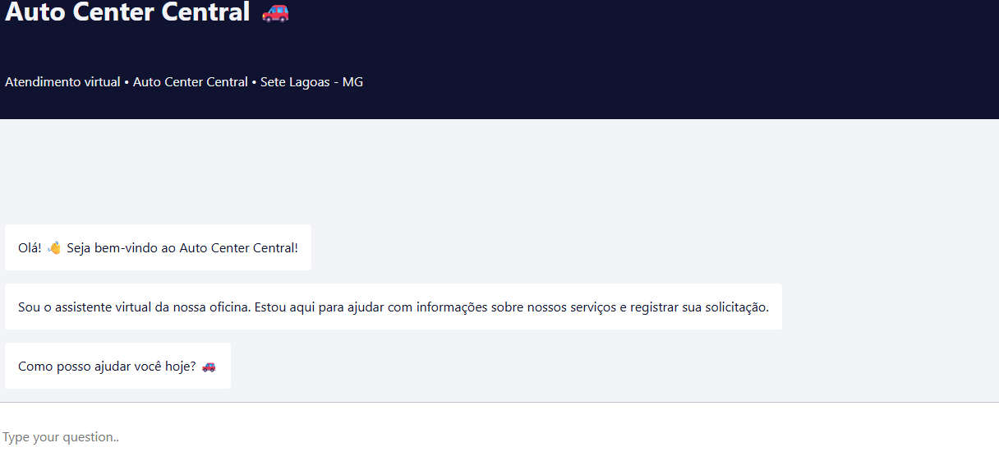

Projeto em destaque
Auto Center Central — agente de atendimento
Protótipo demonstrativo de atendimento virtual para uma oficina mecânica em Sete Lagoas–MG, desenvolvido com n8n e integração ao Google Sheets.
n8nAgente de IAGoogle SheetsAtendimento automatizado
Como funciona
- O cliente informa nome, telefone, veículo e serviço desejado.
- O agente organiza os dados e apresenta um resumo para conferência.
- Solicita autorização antes de registrar as informações.
- Com a autorização, grava a solicitação automaticamente no Google Sheets.
- Confirma ao cliente somente depois que o registro é concluído.
Objetivo: demonstrar como um atendimento inicial pode ser organizado e registrado automaticamente, mantendo a confirmação do cliente antes de salvar seus dados.
Veja o projeto em funcionamento
Imagens reais do fluxo de automação e da interface pública utilizada nos testes.

Fluxo de automação construído no n8n.

Interface de atendimento do agente virtual.
Resultado e transparência
O protótipo foi testado de ponta a ponta: atendimento pelo chat público, coleta e conferência de informações, pedido de autorização e registro automático em uma planilha Google Sheets.
Este é um projeto demonstrativo funcional, com dados fictícios de teste. Não representa uma implantação comercial em uma oficina cliente.
Vamos conversar?
Interessado em atendimento inteligente ou automações para seu negócio?
Gabriel Melo · Sete Lagoas – MG